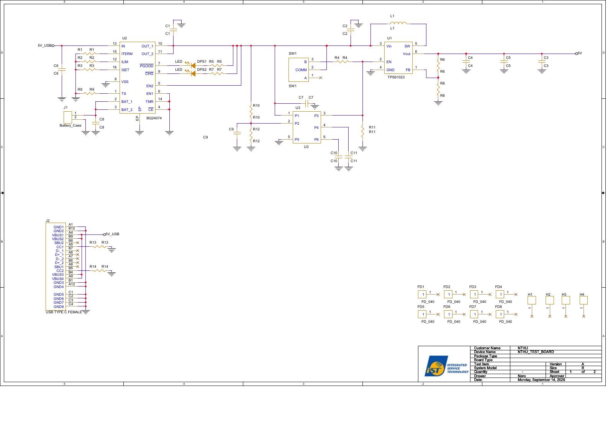
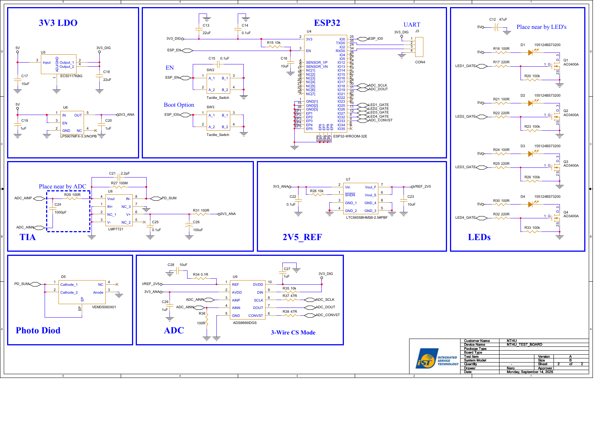

Page 1 of 2
Back to page navigation
Read extracted page text
Text extracted from the source PDF. Equations and table layout are best checked against the page image or original PDF.
5 5 4 4 3 3 2 2 1 1 D D C C B B A A 5V_USB5V_USB5V SizeCustomer NameApproverDate:Sheet ofDevice NamePackage TypeBoard TypeTest ItemSystem ModelQuantityDrawerVersion NTHUANTHU_TEST_BOARDB1 2Monday, September 14, 2026Nero-SizeCustomer NameApproverDate:Sheet ofDevice NamePackage TypeBoard TypeTest ItemSystem ModelQuantityDrawerVersion NTHUANTHU_TEST_BOARDB1 2Monday, September 14, 2026Nero-SizeCustomer NameApproverDate:Sheet ofDevice NamePackage TypeBoard TypeTest ItemSystem ModelQuantityDrawerVersion NTHUANTHU_TEST_BOARDB1 2Monday, September 14, 2026Nero- R5 R5 FD2FD_04011C10C10DPS2LED FD5FD_04011 U2BQ24074IN13VSS8BAT_12BAT_23OUT_110OUT_211EN25EN16TMR14CE4PGOOD7CHG9ITERM15ILIM12ISET16EPEPTS1 C7 C7C4C4U3U3P11P22P55P33P44P66FD3FD_04011 R8R8R4 R4R6R6R2 R2C6C6R10R10R7 R7C1C1 FD4FD_04011H41 J1Battery_Case12 H31 DPS1LEDC8C8U1TPS61023Vin3GND4EN2SW5Vout6FB1R9 R9 FD8FD_04011 SW1SW1COMM2A1B3 H21 L1L1 H11R13 R13C9C9FD7FD_04011 R1 R1J2USB TYPE C FEMALEVBUS2B9GND2B12VBUS3B4GND4A12GND5C1GND6C2GND7C3GND8C4CC1A5D+_1A6D-_2A7SBU1A8SBU2B8D-_1B7D+_2B6CC2B5GND1A1VBUS1A4VBUS4A9GND3B1 R3 R3C5C5 R14 R14FD1FD_04011 C2C2R12R12C3C3C11C11FD6FD_04011R11R11
Page 2 of 2
Back to page navigation
Read extracted page text
Text extracted from the source PDF. Equations and table layout are best checked against the page image or original PDF.
5 5 4 4 3 3 2 2 1 1 D D C C B B A A 3V3 LDO LEDs2V5_REF EN Boot Option UARTESP32 Photo Diod TIA ADC Place near by ADC Place near by LED's 3-Wire CS Mode LED1_GATELED2_GATELED3_GATELED4_GATELED1_GATELED2_GATELED3_GATELED4_GATEESP_ENESP_ENESP_IO0ESP_IO0ADC_CONVSTADC_SCLKADC_DOUT PD_SUMADC_CONVSTADC_SCLKADC_DOUTADC_AINPPD_SUMADC_AINPADC_AINNADC_AINN5V3V3_DIG5V3V3_ANA5V5V5V5V3V3_ANAVREF_2V53V3_DIG3V3_DIG VREF_2V53V3_DIG3V3_ANA3V3_ANA 5V SizeCustomer NameApproverDate:Sheet ofDevice NamePackage TypeBoard TypeTest ItemSystem ModelQuantityDrawerVersion NTHUANTHU_TEST_BOARDB2 2Monday, September 14, 2026Nero-SizeCustomer NameApproverDate:Sheet ofDevice NamePackage TypeBoard TypeTest ItemSystem ModelQuantityDrawerVersion NTHUANTHU_TEST_BOARDB2 2Monday, September 14, 2026Nero-SizeCustomer NameApproverDate:Sheet ofDevice NamePackage TypeBoard TypeTest ItemSystem ModelQuantityDrawerVersion NTHUANTHU_TEST_BOARDB2 2Monday, September 14, 2026Nero- R16 100R C271uFR22 220RR26 100k+C12 47uFD3 155124BS73200R29 100RC1710uFC241000pFR24 100RU9ADS8866IDGSREF1AVDD2AINP3AINN4GND5CONVST6DOUT7SCLK8DIN9DVDD10 C1610uFC1822uFD2 155124BS73200R20 100kR17 220RR32 220RR21 100RC201uFSW2Tactile_SwitchA_11A_22B_13B_24C21 2.2pFQ1AO3400AG1D32S R36100RR33 100kD4 155124BS73200R30 100RR34 0.1RR31 100R+C26100uFU6LP5907MFX-3.3/NOPBIN1EN3GND2NC4OUT5 D1 155124BS73200C220.1uFJ3CON41234U7LTC6655BHMS8-2.5#PBFVin2SHDN1GND_13GND_24GND_35GND_48Vout_S6Vout_F7R37 47RQ3AO3400AG1D32SU5EC50117KBGInput3ADJ/GND1Output_12Output_24C1322uF R38 47R U4ESP32-WROOM-32ENC[1]17NC[2]18NC[3]19NC[4]20NC[5]21NC[6]22IO1523IO224IO025IO426IO529IO1931NC[7]32RXD034TXD0353V32EN3SENSOR_VP4SENSOR_VN5IO1316IO1214IO1413IO1627IO1728IO1830IO2133IO2236IO2337IO2510IO2611IO2712IO328IO339IO346IO357GND[1]1GND[2]15GND[3]38EP1EP1EP2EP2EP3EP3EP4EP4EP5EP5EP6EP6EP7EP7EP8EP8EP9EP9C15 0.1uFU8LMP7721IN+1NC_12V-3Vout4NC_25V+6NC_37IN-8 Q2AO3400AG1D32SC140.1uF C250.1uFC291uFR27 100MC2310uFR35 10k R15 10kR28 10kQ4AO3400AG1D32SC28 10uFSW3Tactile_SwitchA_11A_22B_13B_24C191uF R25 220RD5VEMD5060X01Cathode_11Cathode_22Anode3NC4EPEP R23 100k